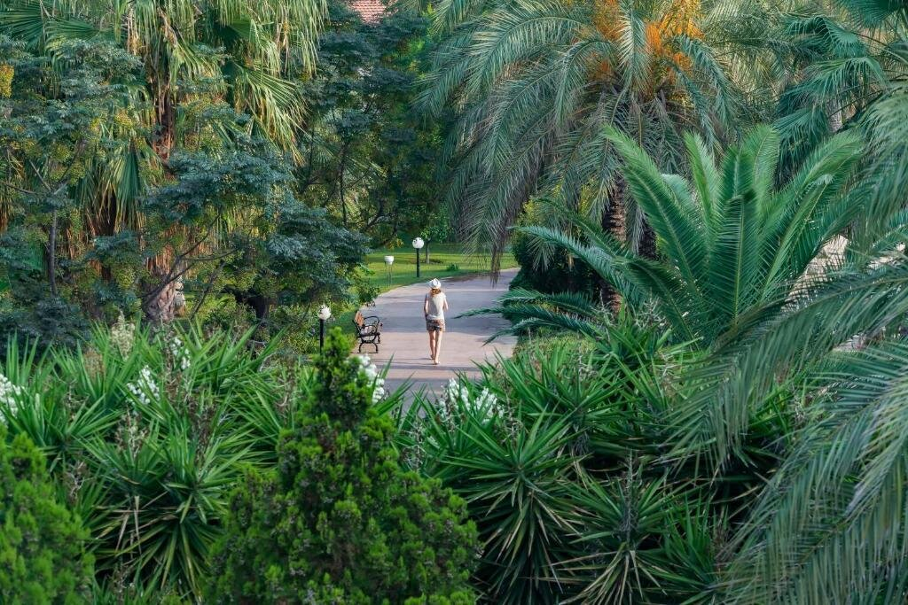

Starlight Resort Hotel ★★★★★, Сиде
На самом деле это огромный комплекс – World Of Sunrise. В нем есть все – даже музей под открытым небом, не говоря про бессчетное количество ресторанов, баров, бассейнов. Непосредственно в Starlight Resort Hotel чуть более 800 номеров. Преимущественно они рассчитаны на семейный отдых, площадь стартует от 41 кв.м., а дизайн выдержан в спокойных природных тонах с небольшими яркими акцентами..
Не удивляйтесь, если увидите на территории индейцев, пиратов или фей – это детские клубы устроили очередную вечеринку. Их здесь три – разделены по возрастам и интересам детей
Взрослым тоже не приходится скучать. В течение всего дня проходят не только спортивные, но и развлекательные мероприятия, а вечером они полностью правят балом. Если же хочется позаниматься спортом в собственном темпе – семь бассейнов, 30 теннисных кортов, профессиональные футбольные поля, стена для скалолазания, площадки для спортивных игр, тренажерный зал к вашим услугам.
Более пятисот номеров расположились в четырех корпусах, главным из которых считается 13-этажная высотка. Номера есть на любой вкус – от скромных в 18 кв.м. до делюксов площадью 56 кв.м. А для вип-гостей – Ottoman Palace 450 кв.м. с гостиНо все же лучший отдых – это песчаный пляж и тенистые экзотические сады. Они настолько большие, что места точно хватит всем.ной, гардеробной, мини-кухней.
"Мини-клуб хорош. Аниматоры постоянно что-то придумывают, реально занимаются с детьми – это главное впечатление моего ребенка от отдыха, даже море перебили) На территории павлины, лошади. Территория огромная – это два отеля вместе, туристы могут пользоваться всем. А вот с пляжем есть проблемы – лежаков не всегда хватает. Что странно, т.к. у бассейнов всегда были свободные. Кто-то жаловался еще и на еду – здесь не поддержу. Еды много, разная, приготовлено нормально. Особых изысков нет, но на уровне обычного ресторана." – Марина П.